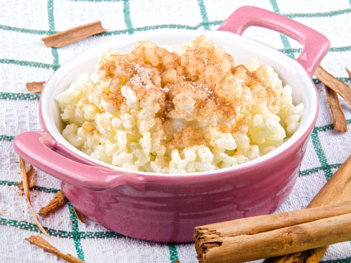

Rice Pudding

Description
This is a recipe for my homemade Rice Pudding. It will provide you with a filling rice pudding to serve for all the family.
I hope you find this recipe easy to follow and the rice pudding tasty and delicious.
Ingredients
- pudding rice
- butter
- sugar
- semi-skimmed milk
- nutmeg
- lemon zest
Steps
- Heat the oven to 150C/130C fan/gas 2. Wash and drain the rice.
Butter a 850ml baking dish, then tip in the rice and sugar and stir through the milk.
Sprinkle in the nutmeg and top with the bay leaf or lemon zest.
- Cook for 2 hrs or until the pudding wobbles ever so slightly when shaken.